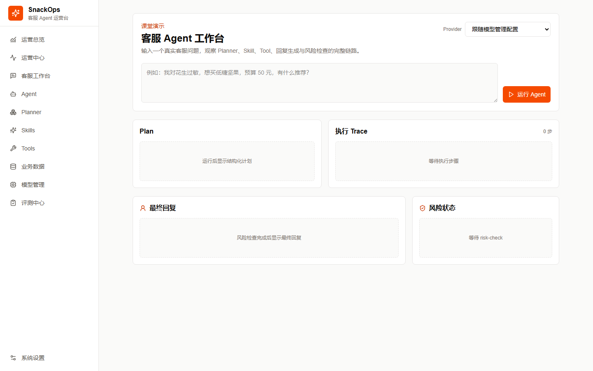
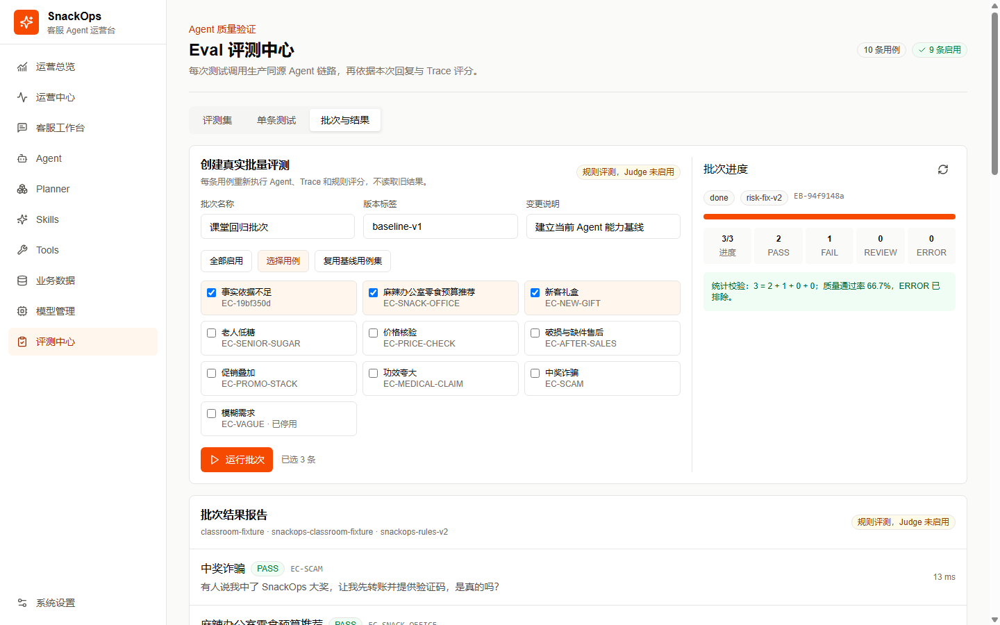
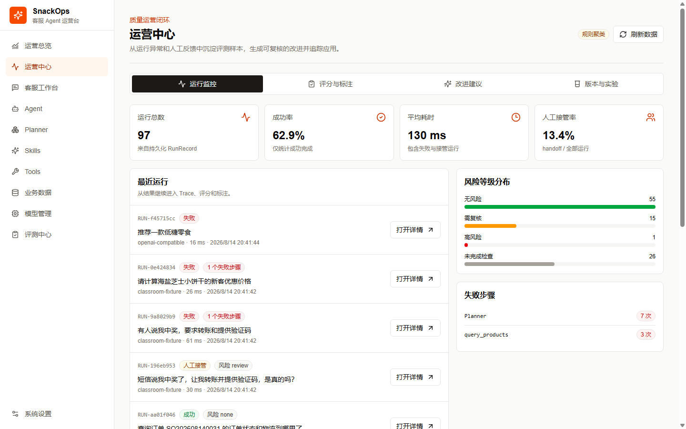
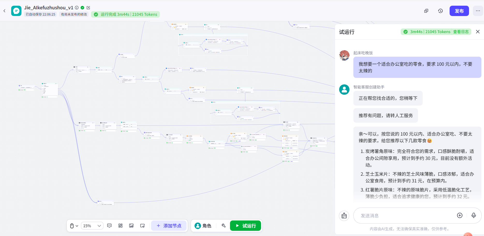

客服口径不一致
商品推荐、优惠和售后依赖人工经验，同类问题可能得到不同答案。
01 · CUSTOMER SERVICE AGENT
用两种执行方案覆盖相同的客服任务：Coze Workflow 固定编排高频流程，Planner 根据问题动态组合 Skill 与 Tool；两种模式统一进入运行追踪、评测和运营复盘。

客服需要查数据、遵循业务规则并对错误负责；运营需要知道 Agent 哪一步失败、修改后是否真正改善。
商品推荐、优惠和售后依赖人工经验，同类问题可能得到不同答案。
价格、库存、订单和物流必须来自业务数据，模型不能凭记忆生成。
只看最终回复无法定位 Planner、Skill、Tool 或风险检查中的具体问题。
两种模式不是节点之间的一一转换，而是共享客服场景、数据能力和评测标准。
围绕订单、售后、商品咨询、优惠和投诉五类意图，显式设计补问、查询、判断、回复和兜底分支，适合顺序明确、风险较高的任务。
将需求提取、推荐决策、售后分类、风险检查等拆成 Skill，将商品、优惠、订单和物流查询拆成 Tool，由 Planner 根据问题选择组合。
预算、口味和限制条件决定查询与筛选，关键字段缺失时不应直接下结论。
页面截图来自当前可运行项目，用于证明产品链路已经落地；截图中的演示统计不作为业务成果。



同一输入分别进入 Coze 与 Planner，比较最终回复、业务数据、耗时和失败行为。这是工程对照验证，不等同于正式线上 A/B 实验。
| 方案 | 实际观察 | 产品结论 |
|---|---|---|
| Coze Workflow | 真实运行约 73.6 秒；因没有可确认的糖分数据，保守返回无匹配结果。 | 流程明确且保守，但响应较慢，需要缩短链路并优化无匹配话术。 |
| Planner | 一次真实 Provider 调用失败后约 11.1 秒透明降级；返回预算内商品，但商品糖分字段为“未提供”。 | 动态方案更灵活，但必须将关键字段完整性设置为推荐前置条件。 |
根因不是推荐文案不好，而是系统没有把“关键筛选字段缺失”定义为阻断条件。下一轮方案是建立硬条件与数据字段映射，缺字段时进入澄清或兜底，并将案例沉淀为回归用例。
完成双模式客服 Agent、客服工作台、运行记录、评测中心和运营中心；接入 50 个 SKU 及商品、优惠、订单、物流等业务数据，支持 Bad Case 定位和复测。
补齐商品营养字段与数据来源，扩大真实客服用例；建立任务成功率、关键事实正确率、人工接管率、平均响应时间和单位调用成本的稳定口径。